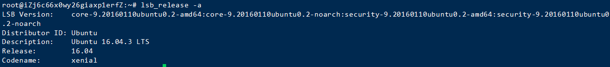
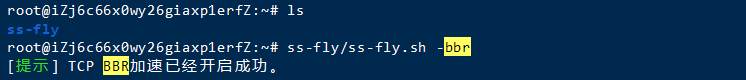

本文提到的部署香港节点实现科学上网，需要配合 shadowsocks-manager。
前情提要
【1】由于设置节点端口随机开放，所以我已经在将服务器的端口从60000-65536全打开了，目的是为了方便，并且全程是在root权限下进行。
【2】不同系统乃至不容系统版本之间的安装方式都有些许不同，这里我只以 Ubuntu 16.04 为例。
节点配置
1 | 【1】来源：阿里云 - 轻量应用服务器 |
部署过程
替换Ubuntu更新源
镜像来自于：阿里巴巴开源镜像站
，为了大家方便我就直接贴在下面了。
首先，编辑/etc/apt/sources.list
1 | vi /etc/apt/sources.list |
其次，按键盘i进入编辑模式，把下面内容粘贴进文件里。
1 | deb http://mirrors.aliyun.com/ubuntu/ bionic main restricted universe multiverse |
最后，刷新一遍更新源即可。
1 | sudo apt-get update |
安装ShadowSocks-libev(必需)
直接按顺序输入下面4条指令即可
1 | sudo apt-get install software-properties-common -y |
安装Node.js(必需)
1 | curl -sL https://deb.nodesource.com/setup_10.x | sudo -E bash - |
安装shadowsocks-manager(必需)
1 | sudo npm i -g shadowsocks-manager --unsafe-perm |
开启BBR加速(优化)
过程中会重启一次，执行第二条命令时请在ss-fly该目录下执行
1 | git clone https://github.com/p4st0r/ss-fly.git |
创建两个重要文件(必需)
default.yml
1 | type: s |
ssmgr.sh
1 | setsid ss-manager -u -m chacha20-ietf-poly1305 --manager-address 127.0.0.1:6001 & |
如果yml文件不用defualt的话，他后面会自动生成一个default.yml，可能会影响节点正常。
运行节点
该目录下运行指令即可
1 | sh ssmgr.sh |
如何使用
使用的话要配上下一篇文章用ss-manager搭建自己的机场来管理节点【2】